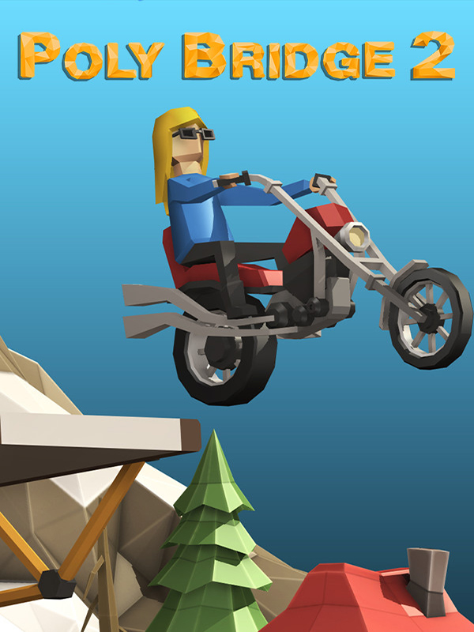

Poly Bridge 2
Poly Bridge 2
Detalhes
|  | |
| Tempo de jogo | 13m 0s |
| Última Atividade | 05/02/2023 16:48:49 |
| Adicionado | 11/02/2025 13:17:42 |
| Modificado | 11/02/2025 13:34:53 |
| Status de Conclusão | Jogado |
| Biblioteca | Steam |
| Fonte | Steam |
| Plataforma | PC (Windows) |
| Data de Lançamento | 28/05/2020 |
| Pontuação da Comunidade | 80 |
| Avaliação da crítica | 80 |
| Pontuação do Usuário | |
| Gênero | Indie Puzzle Simulator |
| Desenvolvedor | Dry Cactus |
| Editor | Dry Cactus |
| Funções | Single Player |
| Links | Steam Epic Android Official iPhone iPad Discord Wikipedia Twitch |
| Tag | |
Descrição
O aclamado simulador de construção de pontes está de volta, e melhor do que nunca!
Novos níveis, novas mecânicas, motor de física personalizado, campanhas de oficina e muito mais! Redescubra a sua criatividade de engenharia com ainda mais horas de diversão de quebrar a cabeça!
Adrian Talens está de volta com uma trilha sonora completa! Relaxe ao som de música suave com 13 faixas inéditas aclamadas pela crítica, além das 18 músicas originais de Poly Bridge remasterizadas! Aproveite mais de uma hora e meia de melodias do violão agradável que você já conhece.

Enfrente níveis com um amortecimento adicional e salte para a vitória com o novo material Mola. Agora as suas pontes podem ser ainda mais flexíveis!

Nos superamos e criamos um motor de física personalizado e aperfeiçoado especificamente para simulações de ponte. Ele garante os mesmos resultados de simulação para todos os jogadores, com precisão e previsibilidade, e mantém o aspecto competitivo do jogo à toda!

Enfrente outros jogadores nos novos placares de líder separados, o geral e o sem rompimento! Entradas do placar de líder são verificadas após o envio, para garantir uma experiência justa para todos os jogadores.

Construa pontes com o seu streamer favorito! A Extensão Twitch do Poly Bridge 2 permite que o público e os streamers trabalhem juntos; o público pode projetar e enviar pontes diretamente ao seu streamer favorito, para que ele ou ela possa jogar e testar! Saiba mais em

Crie níveis únicos do zero e envie-os à Oficina do jogo com um criador de níveis melhorado, com objetos novos, rampas personalizadas e mais de vinte veículos para escolher! Esbanje criatividade, crie seus próprios quebra-cabeças e encontre uma variedade sem fim de níveis criados por outros jogadores!

Agrupe e organize os seus níveis de oficina nas novas Campanhas de Oficina! Projete mundos inteiros de campanhas, incluindo níveis múltiplos com uma temática em comum e progressão de dificuldade. Também incluímos mais de 100 níveis originais do Poly Bridge para você jogar novamente na seção de Campanhas de Oficina na Oficina do jogo!

- Indicador da primeira quebra: quando a sua ponte estiver despencando, pode ser difícil saber onde você errou. Faça diagnósticos e resolva problemas facilmente com esta nova ferramenta simples que destaca o primeiro pedaço a quebrar.
- Juntas triplas: pontes levadiças e mecanismos hidráulicos agora podem ser aprimorados com juntas triplas. Utilize projetos móveis complexos na sua ponte com diversas peças móveis.
- Replays de vídeos em alta resolução: grave vídeos em alta resolução para mostrar os seus fracassos mais hilários e os seus sucessos mais incríveis aos seus amigos nas mídias sociais. Compartilhe as suas pontes com o mundo!